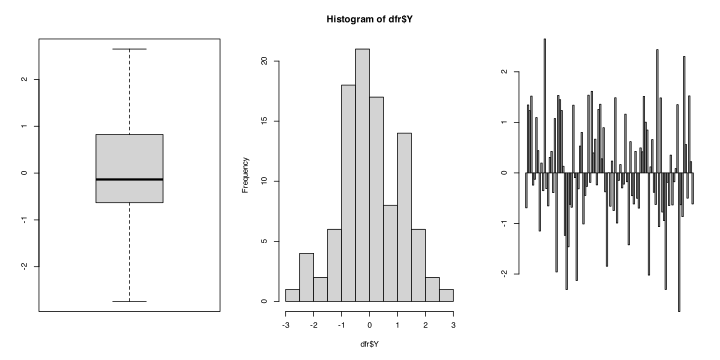
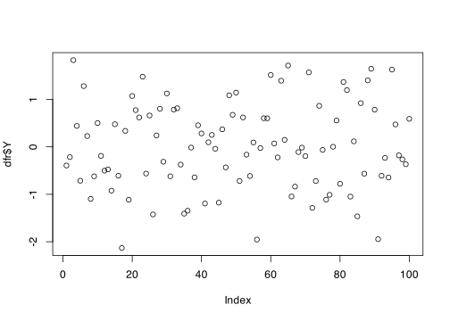
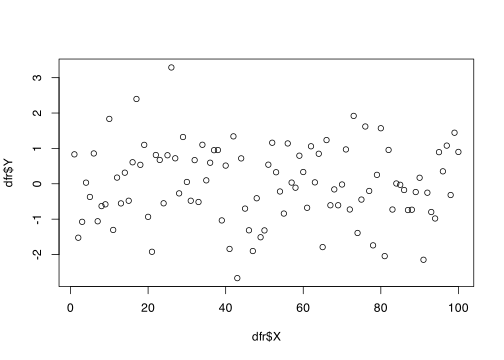
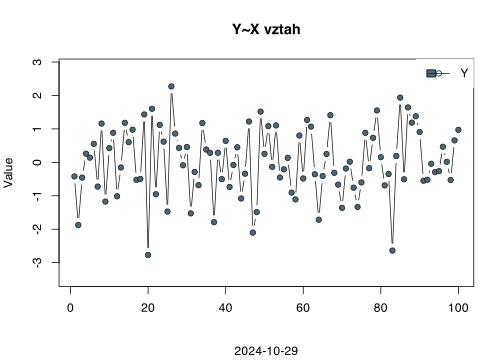
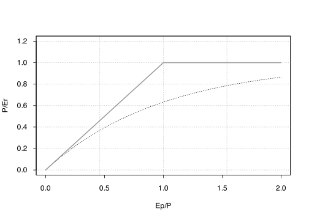
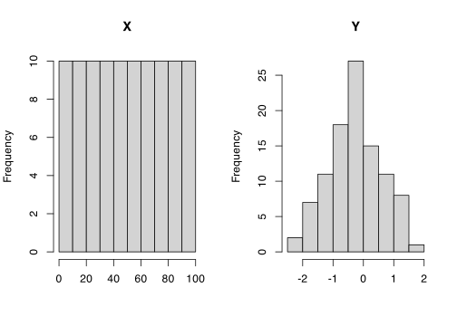

Kód
dfr <- data.frame(
X = 1:100,
Y = rnorm(100)
)- 1
- K vytvoření proměnné \(Y\) použijeme generování čísel z náhodného rozdělení s parametry \(\mu = 0\) a \(\sigma = 1\); více v kapitole Kapitola 7
V R dnes existují dva rúzné systémy pro tvorbu diagramů. První je obsažen v balíčku base a druhý staví na funkcionalitě obsažené v grid.
Opět připravím datovou sadu, tentokrát umístíme do data.frame jménem dfr.
dfr <- data.frame(
X = 1:100,
Y = rnorm(100)
)demo(graphics) a projeďte až na konec ukázky. Potom vyčistěte panely Environment, Plots a Console.?parcurve()Curve je funkce, která se uplatní při tvorbě symbolických grafů matematických funkcí, kdy není třeba parametrizovat argument x.
curve(expr = tanh(x),
from = -pi,
to = pi)
plot()plot(x, y, ...) je základní S3 generická funkce, jejíž metody umožňují použití na široké množství objektů. Začneme s použitím na vektor z datasetu dfr.
plot(dfr$Y)
plot(x = dfr$X,
y = dfr$Y,
type = "b",
col = "gray10",
pch = 21,
bg = "#4a6777",
ylim = c(-abs(1.25 * min(dfr$Y)),
1.25 * max(dfr$Y)),
xlab = "",
ylab = "Value",
main = "Y~X vztah",
sub = Sys.Date())
legend(x = "topright",
fill = "#4a6777",
pch = 21,
legend = c("Y"),
box.col = NA,
lty = 1,
col = "gray10")"b" označuje body protnuté spojnicí.

with(data = dfr,
expr = {
plot(x = X, y = Y)
lines(x = X, y = Y)
}
) with() umožňuje zavolání funkce uvedené v arugmentu expr na proměnných v data.frame. Odpadá opakované psaní prefixu datové sady (zde dfr$___)
expr může obsahovat i blok kódu {...}

Výpis všech předdefinovaných barev1 lze získat příkazem colors().
colors()[1:10] [1] "white" "aliceblue" "antiquewhite" "antiquewhite1"
[5] "antiquewhite2" "antiquewhite3" "antiquewhite4" "aquamarine"
[9] "aquamarine1" "aquamarine2" ?plotmath demo(plotmath)
Jednoduchý pravidelný layout můžeme vytvořit změnou parametrů okna grafického výstupu pomocí funkce par()
par()par(mfrow = c(1, 2))
hist(dfr$X, main = "X", xlab = "")
hist(dfr$Y, main = "Y", xlab = "")
layout() a maticelayout.show(
layout(
mat = matrix(
data = c(2, 2, 0,
1, 1, 3,
1, 1, 3),
nrow = 3,
ncol = 3,
byrow = TRUE)))
Předdefinovaných barev je celkem 657.↩︎